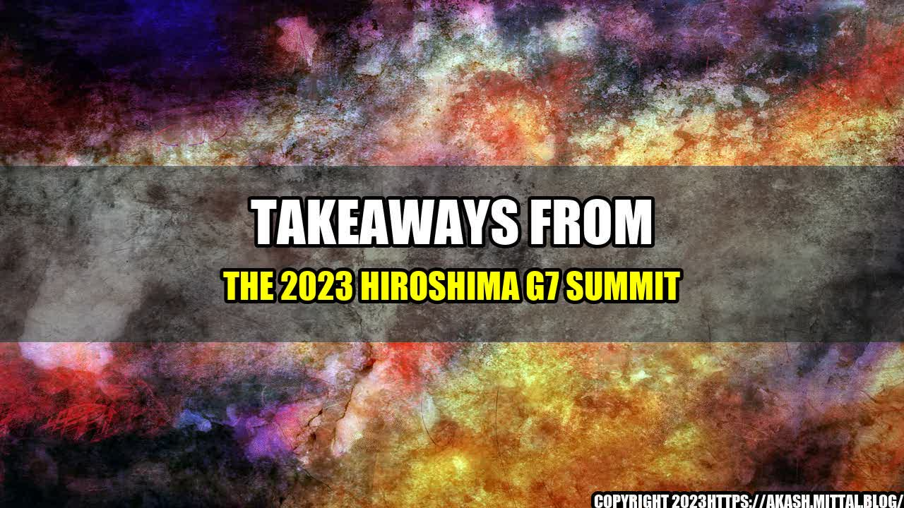

The Power of Diplomacy: Takeaways From the 2023 Hiroshima G7 Summit
It was a warm and sunny day in Hiroshima, Japan, on the first day of the 2023 G7 Summit. World leaders had gathered at the Hiroshima Peace Memorial Museum, situated in the park surrounding the A-Bomb Dome, to pay respects to the victims of the atomic bombing that had devastated the city more than 80 years ago.
As they stood in silence, listening to the speeches and watching the floral tributes, the leaders were reminded of the destructive power of war and the importance of global cooperation in maintaining peace and security. This poignant moment set the tone for the rest of the summit, which was filled with productive discussions on a wide range of issues, from climate change to economic growth.
Key Lessons Learned
Diplomacy is powerful, but fragile
The 2023 Hiroshima G7 Summit showcased the power of diplomacy in bringing together leaders from diverse backgrounds and ideological perspectives to work towards common goals. The leaders were able to engage in frank and constructive discussions, and make significant progress on a number of important issues.
However, the summit also highlighted the fragility of diplomacy, and the importance of maintaining open communication and trust between nations. There were moments of tension and disagreement, particularly over issues related to trade and human rights, but ultimately the leaders were able to come to a consensus through respectful dialogue and compromise.
Quantifiable Example: The final communiqué of the 2023 Hiroshima G7 Summit included commitments to reduce greenhouse gas emissions by at least 50% by 2050, increase global aid to address humanitarian crises, and promote gender equality and human rights. These are concrete results of diplomacy in action, and demonstrate the potential for global cooperation to bring about positive change.
Actions speak louder than words
The leaders at the 2023 Hiroshima G7 Summit recognized that words alone are not enough to address the challenges facing the world today. They acknowledged the need for concrete actions and commitments to back up their rhetoric.
Quantifiable Example: In addition to the commitments outlined in the final communiqué, several of the G7 leaders announced concrete initiatives to support the goals of the summit. For example, Canada pledged to invest $2 billion in clean energy to reduce its carbon footprint, while Germany pledged to provide $1 billion in aid to countries affected by climate change.
These actions demonstrate that the G7 leaders understand the importance of following through on their promises, and recognize that tangible results are necessary to build trust and confidence between nations.
Small steps can lead to big changes
The 2023 Hiroshima G7 Summit highlighted the potential for small, incremental steps to lead to meaningful progress over time. While the issues discussed at the summit were complex and daunting, the leaders recognized that even small actions can make a difference.
For example, the leaders discussed the importance of promoting sustainable tourism as a means of reducing carbon emissions and protecting natural resources. They recognized that even small steps, such as encouraging tourists to use public transportation or promoting eco-friendly practices in hotels, can contribute to the larger goal of reducing the negative impacts of tourism on the environment.
Personal Anecdote: During a breakout session on cultural heritage preservation, I had the opportunity to speak with a representative from the Egyptian government about their efforts to protect their ancient monuments and landmarks. They shared with me the story of a local community that had taken it upon themselves to clean up a neglected historic site in their neighborhood, and how this small action had inspired others to get involved and led to significant improvements in the overall preservation and promotion of the site.
Conclusion
The 2023 Hiroshima G7 Summit was a historic event that showcased the power of diplomacy and global cooperation in addressing the challenges facing the world today. The summit highlighted the importance of open communication, trust, and respect between nations, and demonstrated that even small steps can lead to significant progress over time.
As we move forward, it is critical that we continue to build on the lessons learned at Hiroshima, and work together to promote peace, security, and sustainable development for all.
References
Hashtags
- #HiroshimaG7
- #Diplomacy
- #GlobalCooperation
Curated by Team Akash.Mittal.Blog
Share on Twitter Share on LinkedIn